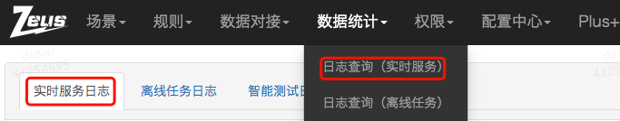
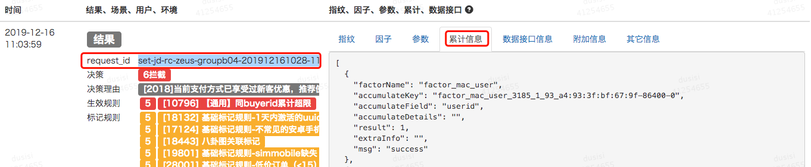
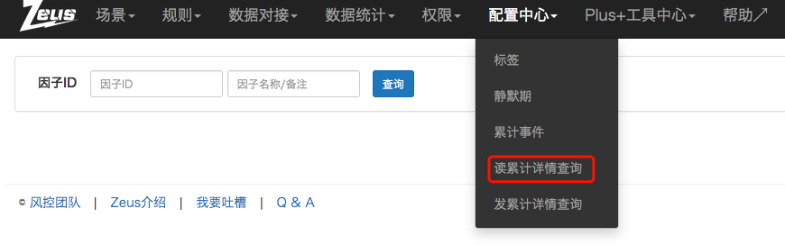
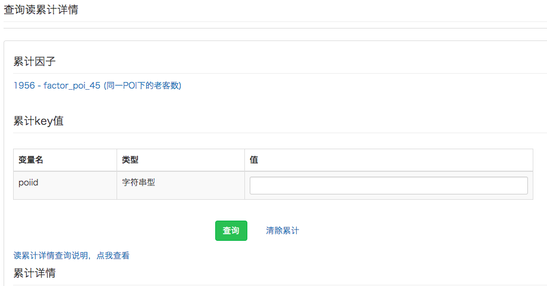
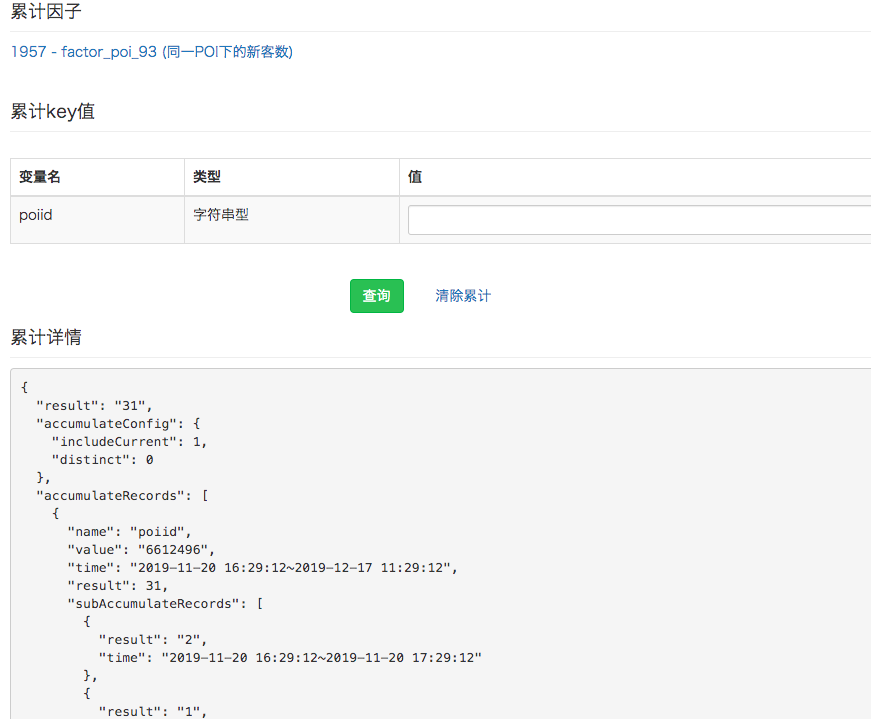
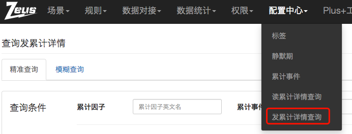
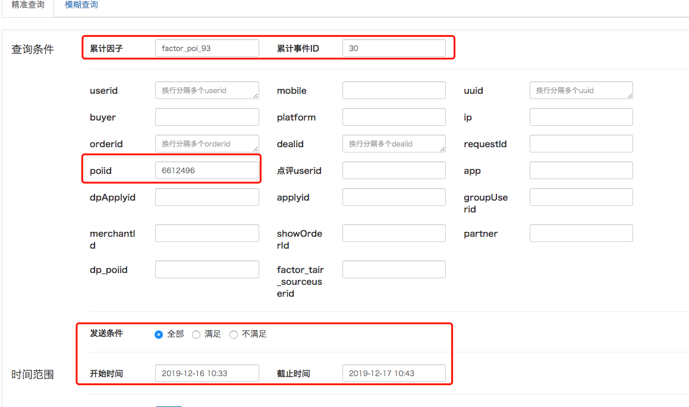
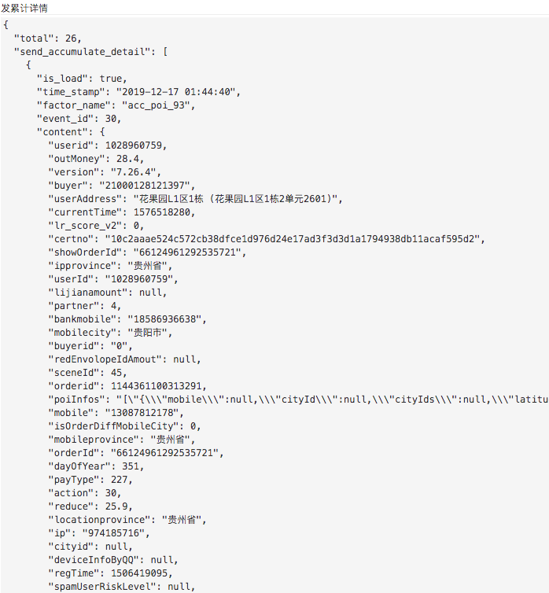

说明：累计因子排查工具
一、背景
累计因子的数据异常排查因无法实现全流程排查导致异常定位困难排查周期长等问题，
通过提供累计因子的读、写以及读写流程串联工具，实现快速定位异常。
二、名词解释
累计因子的读：即规则执行时，读取该请求，满足累计读取条件时，读取累计因子的值（要先有写累计，读取才能有数据）
累计因子的写：即累计事件发送累计请求时，满足累计写入条件，在累计因子中该key值进行记录
例如：
累计因子--近1天用户登录成功使用的累计IP量（去重）
累计因子的写--登录事件请求，只有登录成功且IP值非空时才会写userid下的累计ip
累计因子的读--执行规则时，读取近1天用户登录成功使用的累计IP量，该userid的累计ip数值为“1”
三、操作详情
前提：已经配置了累计因子，且累计因子已经设置上线，且累计因子已经在标记或生效规则中使用；
若不满足前提条件，累计因子异常因未配置原因导致，无需参照如下流程排查了
Step 1: 通过case/日志差发现累计因子数值不符合预期
|
操作说明 |
页面演示 |
|---|---|
|
入口： 日志查询（实时服务） |
 |
|
查看数据结果获取关键查询信息 requestid、累计因子名称、累计key值 |
 |
Step 2: 累计因子的累计详情查询
|
操作说明 |
页面演示 |
||||||||||||||||
|---|---|---|---|---|---|---|---|---|---|---|---|---|---|---|---|---|---|
|
入口： 配置中心-->读累计详情查询 查询说明：
|
  |
||||||||||||||||
查看数据结果以及数据结果解读
|
 |
Step 3: 发送累计详情查询
|
操作说明 |
页面演示 |
||||||||||||||||
|---|---|---|---|---|---|---|---|---|---|---|---|---|---|---|---|---|---|
|
入口： 配置中心-->累计详情查询 查询说明：
|
  |
||||||||||||||||
查看数据结果以及数据结果解读
|
 |
四、FAQ
Q1: 发送累计的精准查询中的参数是否支持扩展，即新增其他参数
--A：@梁建华
Q2: 累计因子读的累计结果不是0就是1
--A：（1）这种情况下，一般是发累计出现了问题，直接查询Step3，确认是否发累计了；
（2）业务发送累计和读取累计（获取决策）的上下文不同，导致发送累计key与读取累计key不同，进而导致读累计结果一直为0。查看context中字段和累计详情中的key能发现二者的不同，或者{比较log.rc_zeus_accumulate hive表里的sendList字段和日志查询累计详情tab中累计key，能发现二者的不同}
（3）sceneid和risklevel配置到累计因子中，除了TT特殊处理的几个累计事件外，两个参数均不可以作为累计key（TT处理了哪些累计事件 Tatooine 日常FAQ-累计篇）
Q3: 读不到累计
--A：（1）优先确定“已经配置了累计因子，且累计因子已经设置上线，且累计因子已经在标记或生效规则中使用”；其次看是否发累计看累计条件是否满足、读累计值看读取条件是否满足（一般情况下读取条件与累计条件是相同的，可以点开高级看到）；
（2）若是（1）中条件都满足，但仍读不到值，需要确认累计key是否过长。累计服务限制key的字节长度要小于1000。如果超过该长度，读取累计时code会返回4.
Q4: 累计到某个值后就不再增长
--A：（1）累计对单个key的内容大小有限制，要求小于100K，否则内容过大，底层存储服务不支持。遇到此类问题请到zeus上查询累计详情，确认累计内容是否过大。
（2）累计类型为去重计数或去重求和时，去重的次数不能超过1000次，此时会发现1000次以后累计不上的问题从而造成累计不准确，解决方法是对于去重次数太多的情况不使用去重功能（可以容忍一定误差）
Q5: 没有发送累计，但是累计因子却有值
--A：因为累计因子新建时默认为累计自身，在读取累计时，会把当前请求的结果加到累计因子的值上。
Q6: 发送了累计，累计详情显示已经有数据（表示发送累计成功），但是拿到的累计因子的值不符合预期
--A：（1）通过Step2关联Step3查看串联数据，定位问题；（2）也可能是累计因子是累计自身的，在读取累计因子结果时，累计值不能为null，否则无法读累计成功
Q7: 已过期的累计因子的读累计详情可以查询么？
--A：当前不支持，预计在2020Q1支持查询已过期的累计因子读累计详情查询；
Q8: 日志中参数问题涉及到累计的几种情况
--A：（1）在日志查询的参数tab显示参数为空串，在累计tab看到也拿到了累计因子的结果，但是累计因子的读取条件却设置了该参数不为空串，出现这个问题需要查hive表进行验证，因为日志查询在参数/因子的值带有尖括号时会显示为空串，如在hvie中显示的"ssid":"<unknown service>"在日志查询上显示为“ssid”: ""；因此是显示问题
（2）某个参数存在且有值，但在日志查询的累计tab显示错误信息为"lost param key xxx"，显示缺失该参数，这是由历史原因造成的，只需要强制更新一下该累计因子即可
（3）调用发送/删除累计接口，如果不填“满足何种条件累计”，则无法进行发送操作，如果不填“删除条件”，则无法进行删除操作